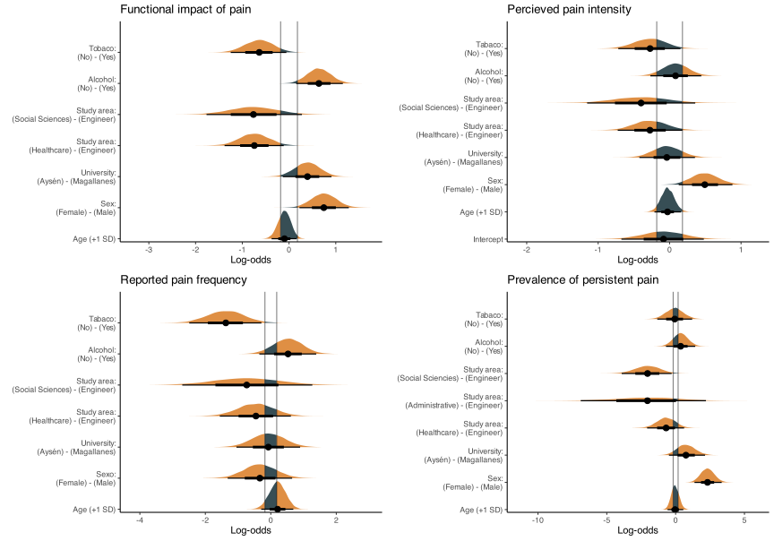
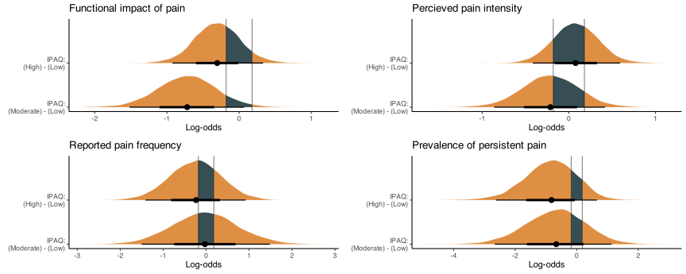
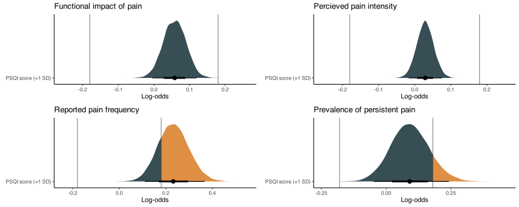
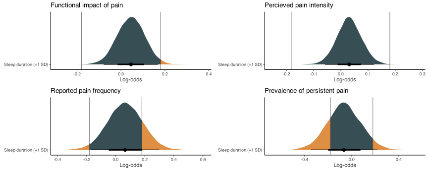

Característica |
Global |
Genero |
Duración Dolor |
||||||
|---|---|---|---|---|---|---|---|---|---|
N = 157 1 |
Masculino |
Femenino |
Difference 2 |
95% CI 2,3 |
≥ 3 meses |
< 3 meses |
Difference 2 |
95% CI 2,3 |
|
| Edad | 22 ± 5 | 21 ± 5 | 22 ± 6 | -0.20 | -0.54, 0.14 | 22 ± 5 | 22 ± 6 | -0.03 | -0.38, 0.33 |
| Género | |||||||||
| Masculino | 52 (35%) | 25 (23%) | 27 (68%) | ||||||
| Femenino | 98 (65%) | 85 (77%) | 13 (33%) | ||||||
| Universidad | |||||||||
| Universidad de Magallanes | 113 (73%) | 43 (83%) | 64 (67%) | 80 (70%) | 33 (80%) | ||||
| Universidad de Aysén | 42 (27%) | 9 (17%) | 32 (33%) | 34 (30%) | 8 (20%) | ||||
| Nacionalidad | |||||||||
| Chile | 150 (99%) | 48 (98%) | 95 (99%) | 112 (99%) | 38 (97%) | ||||
| Colombia | 1 (0.7%) | 0 (0%) | 1 (1.0%) | 1 (0.9%) | 0 (0%) | ||||
| Venezuela | 1 (0.7%) | 1 (2.0%) | 0 (0%) | 0 (0%) | 1 (2.6%) | ||||
| Área de Estudios | |||||||||
| Ciencias de la Ingeniería | 18 (14%) | 9 (19%) | 9 (12%) | 14 (16%) | 4 (11%) | ||||
| Ciencias de la Salud | 93 (73%) | 32 (68%) | 56 (76%) | 68 (76%) | 25 (68%) | ||||
| Ciencias Económicas y Administrativas | 2 (1.6%) | 1 (2.1%) | 1 (1.4%) | 1 (1.1%) | 1 (2.7%) | ||||
| Ciencias Sociales | 14 (11%) | 5 (11%) | 8 (11%) | 7 (7.8%) | 7 (19%) | ||||
| Consumo de Alcohol | |||||||||
| Sí | 73 (47%) | 23 (44%) | 49 (50%) | 54 (47%) | 19 (46%) | ||||
| No | 83 (53%) | 29 (56%) | 49 (50%) | 61 (53%) | 22 (54%) | ||||
| Hábito tabáquico | |||||||||
| Sí | 41 (26%) | 10 (19%) | 30 (31%) | 32 (28%) | 9 (22%) | ||||
| No | 116 (74%) | 42 (81%) | 68 (69%) | 84 (72%) | 32 (78%) | ||||
| Duración Dolor | |||||||||
| ≥ 3 meses | 116 (74%) | 25 (48%) | 85 (87%) | ||||||
| < 3 meses | 41 (26%) | 27 (52%) | 13 (13%) | ||||||
| Afectación funcional del Dolor | 4.37 ± 2.72 | 3.38 ± 2.42 | 4.56 ± 2.67 | -0.47 | -0.91, -0.02 | 4.41 ± 2.70 | 0.00 ± NA | 2.3 | 0.33, 4.3 |
| Escala Numérica de Dolor (0-10) | 5 ± 2 | 4 ± 2 | 5 ± 2 | -0.73 | -1.2, -0.29 | 5 ± 2 | 3 ± NA | 1.5 | -0.49, 3.5 |
| Frecuencia del Dolor | |||||||||
| Al menos una vez por mes | 9 (7.7%) | 4 (15%) | 5 (5.9%) | 8 (6.9%) | 1 (100%) | ||||
| Varias veces al mes | 18 (15%) | 1 (3.8%) | 16 (19%) | 18 (16%) | 0 (0%) | ||||
| Al menos una vez por semana | 21 (18%) | 7 (27%) | 14 (16%) | 21 (18%) | 0 (0%) | ||||
| Varias veces a la semana | 53 (45%) | 9 (35%) | 41 (48%) | 53 (46%) | 0 (0%) | ||||
| Todo el tiempo | 16 (14%) | 5 (19%) | 9 (11%) | 16 (14%) | 0 (0%) | ||||
| Nivel de Actividad Física | |||||||||
| Bajo | 19 (13%) | 3 (6.1%) | 16 (18%) | 16 (16%) | 3 (7.9%) | ||||
| Moderado | 28 (20%) | 8 (16%) | 18 (21%) | 21 (20%) | 7 (18%) | ||||
| Alto | 94 (67%) | 38 (78%) | 53 (61%) | 66 (64%) | 28 (74%) | ||||
| MET Total | 3,272 ± 3,218 | 4,138 ± 3,934 | 2,819 ± 2,703 | 0.39 | 0.04, 0.75 | 3,148 ± 3,209 | 3,593 ± 3,262 | -0.14 | -0.51, 0.23 |
| MET AF Vigorosa | 1,210 ± 2,016 | 1,946 ± 2,755 | 849 ± 1,411 | 0.51 | 0.16, 0.85 | 975 ± 1,575 | 1,873 ± 2,846 | -0.39 | -0.76, -0.03 |
| MET AF Moderada | 497 ± 989 | 611 ± 1,252 | 416 ± 759 | 0.19 | -0.15, 0.53 | 491 ± 1,095 | 514 ± 637 | -0.03 | -0.39, 0.34 |
| MET AF Caminata | 1,539 ± 2,176 | 1,590 ± 2,806 | 1,561 ± 1,787 | 0.01 | -0.33, 0.36 | 1,657 ± 2,455 | 1,230 ± 1,143 | 0.22 | -0.14, 0.59 |
| Horas de sueño | 7 ± 2 | 7 ± 2 | 7 ± 2 | 0.02 | -0.32, 0.36 | 7 ± 2 | 8 ± 2 | -0.14 | -0.50, 0.22 |
| PSQI Total | 9 ± 4 | 7 ± 3 | 9 ± 4 | -0.66 | -1.0, -0.32 | 9 ± 4 | 7 ± 4 | 0.52 | 0.16, 0.88 |
| Matutinidad total | 45 ± 8 | 44 ± 8 | 45 ± 8 | -0.07 | -0.40, 0.27 | 45 ± 8 | 45 ± 7 | -0.08 | -0.44, 0.28 |
| Categoría de Matutinidad | |||||||||
| Vespertino extremo | 10 (6.4%) | 3 (5.8%) | 6 (6.1%) | 8 (6.9%) | 2 (4.9%) | ||||
| Vespertino moderado | 38 (24%) | 16 (31%) | 21 (21%) | 31 (27%) | 7 (17%) | ||||
| Intermedio | 99 (63%) | 31 (60%) | 63 (64%) | 68 (59%) | 31 (76%) | ||||
| Matutino moderado | 10 (6.4%) | 2 (3.8%) | 8 (8.2%) | 9 (7.8%) | 1 (2.4%) | ||||
| Matutino extremo | 0 (0%) | 0 (0%) | 0 (0%) | ||||||
| 1
Media ± DE; n (%) |
|||||||||
| 2
Standardized Mean Difference |
|||||||||
| 3
CI = Intervalo de confianza |
|||||||||
1 Análisis Estadístico
1.1 Descriptivos
Para los estadísticos descriptivos se reportaron la media y la desviación estándar (media ± sd) para las variables continuas, y la frecuencia absoluta (n) y relativa (%) para las variables categóricas.
1.2 Marco de análisis
Utilizamos un marco bayesiano para explorar las complejas interacciones entre factores clave asociados con el dolor no oncológico. Los modelos bayesianos son preferibles a los métodos frecuentistas tradicionales porque pueden cuantificar la incertidumbre y estimar los parámetros del modelo de forma más exhaustiva. Además, la inferencia bayesiana permite la inclusión de conocimientos previos sobre los parámetros del modelo, lo que posibilita la integración de hallazgos existentes e investigaciones anteriores. El marco bayesiano proporciona distribuciones posteriores que permiten una interpretación probabilística de las estimaciones de los parámetros con intervalos creíbles que reflejan la incertidumbre de los mismos.
Para evaluar el impacto de factores sociodemográficos, variables de actividad física, calidad del sueño y cronotipo, se desarrollaron cuatro modelos lineales generalizados bayesianos. Estos modelos se utilizaron para analizar el efecto de dichas variables en cuatro dominios del dolor: a) el impacto percibido del dolor en la funcionalidad, b) la intensidad percibida del dolor, c) la frecuencia reportada de episodios dolorosos, y d) la presencia de dolor persistente durante un periodo igual o mayor a 3 meses.
1.3 Impacto funcional e Intensidad del Dolor
Para evaluar el efecto del impacto percibido del dolor sobre la funcionalidad y la intensidad percibida de dolor, ambas escalas que van de 0 a 10, utilizamos un modelo beta-binomial bayesiano, parametrizado según la Ecuación 1.
\[ \begin{aligned} y_i \mid n, \mu_i, \phi &\sim \text{Beta-Binomial}\left(n, a, b\right) \\ a &= \mu_i \cdot \phi \\ b &= (1 - \mu_i) \cdot \phi \\ \end{aligned} \tag{1}\]
En este modelo, los parámetros distribucionales (\(a\), \(b\)), que ajustan la forma de la variable respuesta (\(y_i\)), dependen de la media esperada (\(\mu_i\)) y la dispersión (\(\phi\)). La combinación lineal del intercepto (\(\beta_0\)) y los coeficientes (\(\beta_j\)) de las variables independientes (\(X_{ij}\)) se utilizó para estimar \(\mu_i\) en la escala logit (ver Ecuación 2).
\[ \begin{aligned} \text{logit}(\mu_i) &= \beta_0 + \sum_{j=1}^{p} \beta_j X_{ij} \\ \log(\phi) &= \gamma_0 \end{aligned} \tag{2}\]
1.4 Frecuencia del dolor
La frecuencia del dolor, reportada como una variable ordinal de cinco niveles, se modeló utilizando un modelo de regresión ordinal bayesiano. Este modelo permitió evaluar la probabilidad acumulada de cada nivel de frecuencia, condicionado a las variables de interés, y se parametrizó según la Ecuación 3.
\[ \begin{aligned} \text{logit}~P(Y \leq k | x) &= \alpha_k - \eta \\ \eta &= \sum_{j=1}^{p} \beta_j X_{ij} \end{aligned} \tag{3}\]
Donde \(\alpha_k\) son los umbrales específicos para cada nivel ordinal \(k\), y \(\beta_j\) son los coeficientes de las variables independientes \(X_{ij}\). Los umbrales \(\alpha_k\) se ordenan como parámetros del modelo: \(\alpha_0 = -\infty < \alpha_1 < \cdots < \alpha_{k} = \infty\).
1.5 Estado de dolor persistente
Para valorar la probabilidad de dolor persistente por un periodo de tiempo igual o mayor a 3 meses, utilizamos un modelo de regresión logística bayesiana, parametrizado según la Ecuación 4.
\[ \begin{aligned} y_i \mid X_i &\sim \text{Bernoulli}\left(p_i\right) \\ \text{logit}(p_i) &= \beta_0 + \sum_{j=1}^{p} \beta_j X_{ij} \end{aligned} \tag{4}\]
En este modelo, \(y_i\) denota la presencia o ausencia de dolor persistente, y \(p_i\) es la probabilidad asociada. La función logit de \(p_i\) se expresa como una combinación lineal de las variables independientes \(X_{ij}\), con coeficientes \(\beta_j\) e intercepto \(\beta_0\).
1.6 Priors e Hiperparámetros
Para los coeficientes lineales, se eligieron priors con un efecto regularizador sobre los efectos principales, basados en una distribución normal centrados en cero y con una desviación estandar de 3, (i.e., \(\beta \sim \mathcal{N}(0,3)\)), limitando el efecto de observaciones influyentes y mejorando la convergencia de los modelos.
Para la estimación de los modelos, se usó el algoritmo No-U-Turn, variante del algoritmo Monte Carlo Hamiltoniano, por medio del paquete brms (v2.21.0) y rstan (v2.32.6). Los parámetros del algoritmo fueron 4 cadenas de Markov, 2000 iteraciones iniciales de preparación y 2500 iteraciones efectivas por cadena (10 mil en total).
1.7 Reporte de Indices
Siguiendo el marco Sequential Effect eXistence and sIgnificance Testing (SEXIT) para describir los efectos a partir de modelos bayesianos (Makowski et al. 2019), se comunicaron la mediana y el IC95% (utilizando el intervalo de mayor densidad) como medida de centralidad e incertidumbre, la probabilidad de dirección (pd) como medida de existencia, la proporción de la distribución de probabilidad posterior del signo de la mediana que cae fuera de la región de equivalencia práctica (ROPE) como medida de significación práctica (ps), estimada como una décima parte (1/10 = 0. 1) de la DE de la variable de respuesta, y el factor de Bayes (BF10) utilizando la relación de densidad de Savage-Dickey contra el punto nulo que indica si el valor nulo se ha vuelto menos o más probable dados los datos observados (Heck 2019), utilizando esto como una medida de la magnitud absoluta de la evidencia a favor o en contra de la hipótesis nula (de no efecto). Teniendo en cuenta que ROPE, y por tanto ps, son sensibles a la escala a nivel de predictor, se estandarizó la edad, así como los puntajes obtenidos de los cuestionarios.
Para la interpretación de BF hemos considerado: BF = 1, ninguna evidencia; 1 < BF <= 3, anecdótico; 3 < BF <= 10, moderado; 10 < BF <= 30, fuerte; 30 < BF <= 100, muy fuerte; y BF > 100, como evidencia extrema (Jeffreys 1998). Para la proporción de la posterior en el ROPE consideramos: < 1%, significativo; < 2,5%, probablemente significativo; ≤ 97,5% & ≥ 2,5%, significación indecisa; > 97,5%, probablemente insignificante; > 99%, insignificante (Makowski et al. 2019).
1.8 Convergencia
La convergencia y estabilidad del muestreo bayesiano se ha evaluado mediante R-hat, que debe ser inferior a 1,01 (Vehtari et al. 2019), el tamaño efectivo de la muestra (ESS), que debe ser superior a 1000 (Bürkner 2017), y la inspección visual de los traceplots y las comprobaciones predictivas posteriores. Todos los análisis estadísticos se calcularon e implementaron en el lenguaje de programación R (R Core Team 2021).
2 Resultados
2.1 Caracterización de la muestra
La muestra evalauda consistió de 157 individuos (52 hombres, 98 mujeres y 7 no desearon responder), de los cuales 116 (73.1%) reportaron tener dolor frecuente por más de 3 meses, mientras que solo 41 (26.1%) reportaron dolor por un tiempo menor al mencionado. Las características de la muestra evaluada pueden observarse en la tabla 1.
Tabla 1. Características sociodemográficas, de actividad física, calidad de sueño y cronotipo de los participantes del estudio. Además de las características globales de la muestra, se presentan las diferencias entre grupos de sexo y duración de dolor.
2.2 Efecto de factores contextuales y sociodemogreaficos en el dolor

Figura 1. Factores sociodemográficos y su efecto sobre el dolor en sus diferentes dimensiones. El área sombreada roja representa el área de equivalencia práctica (ROPE).
2.2.1 Edad
Al evaluar el efecto de la edad sobre los distintos dominios de dolor, observamos evidencia moderada a fuerte a favor de la hipótesis nula, lo que sugiere que la edad no tiene un efecto sobre el impacto funcional del dolor (\(\beta\) = 0.05, CI 95% [-0.16, 0.24], pd = 0.67, ps = 0.08, ROPE = 0.93, BF10 = 0.037), ni sobre la intensidad reportada de dolor (\(\beta\) = 0.01, CI 95% [-0.12, 0.15], pd = 0.57, ps = 0.00, ROPE = 1.00, BF10 = 0.023), ni sobre la frecuencia de dolor (\(\beta\) = 0.15, CI 95% [-0.20, 0.51], pd = 0.80, ps = 0.44, ROPE = 0.56, BF10 = 0.084), así como tampoco influyó sobre la probabilidad de tener dolor persistente (\(\beta\) = -0.02, CI 95% [-0.36, 0.38], pd = 0.53, ps = 0.18, ROPE = 0.70, BF10 = 0.063).
Al controlar por la influencia de los demás factores, observamos que el efecto de la edad sobre la repercusión funcional del dolor es negativa (\(\beta\) = -0.10, CI 95% [-0.37, 0.16]) con un 77% de probabilidad (pd) y una baja probabilidad de ser significativo (ps = 0.27), sin embargo, el efecto marginal de la edad sigue brindando mayor evidencia a favor de la hipótesis nula (BF10 = 0.057). En este sentido, la magnitud de evidencia observada para esta variable en modelos ajustados, no otorgó mayor evidencia a favor de la presencia de un efecto (intensidad de dolor, BF10 = 0.033; frecuencia de dolor, BF10 = 0.118; probabilidad de dolor persistente, BF10 = 0.096).
2.2.2 Genero
Al evaluar el efecto del género sobre los distintos dominios de dolor, observamos un 82% de probabilidad que las mujeres experimentan un mayor impacto funcional asociado al dolor (\(\beta\) = 0.39, CI 95% [-0.07, 0.89], pd = 0.95, ps = 0.82, ROPE = 0.330, BF10 = 0.084), una mayor intensidad reportada de dolor (\(\beta\) = 0.49, CI 95% [0.16, 0.82], pd = 0.99, ps = 0.97, ROPE = 0.009, BF10 = 4.55) y cerca de 7 veces más probabilidades de presentar dolor persistente (\(\exp(\beta)\) = 6.96) que su contraparte masculina (\(\beta\) = 1.94, CI 95% [1.16, 2.74], pd = 1.00, ps = 1.00, ROPE = 0.00, BF10 = 2720). Pese a lo anterior, no observamos que el efecto del género fuese significativo sobre la frecuencia del dolor (\(\beta\) = -0.19, CI 95% [-1.03, 0.64], pd = 0.67, ps = 0.51, ROPE = 0.32, BF10 = 0.161).
Al controlar por la influencia de los demás factores, observamos que la magnitud de la diferencia observada entre hombres y mujeres es mayor en relación al impacto funcional del dolor (\(\beta\) = 0.74, CI 95% [ 0.22, 1.28], BF10 = 4.50). Del mismo modo, valorar el efecto marginal del genero, observamos que las mujeres realmente experimentan 10 veces más probabilidades de presentar dolor persistente (\(\exp(\beta)\) = 10.1, \(\beta\) = 2.31, CI 95% [1.37, 3.34], pd = 1.00, ps = 1.00, ROPE = 0.00, BF10 = 9030). Por otra parte, la evidencia aportada pora los otros dominios de dolor no se vió modificado por la inclusión de las otras variables en el modelo (intensidad de dolor, BF10 = 2.04; frecuencia de dolor, BF10 = 0.204).
2.2.3 Universidad de estudio
Cuando comparamos el efecto de formar parte de una casa de estudios en particular, observamos evidencia moderada que apoyaba la hipótesis nula, sugiriendo que la universidad no influye sobre el impacto funcional percibido (BF10 = 0.129), intensidad (BF10 = 0.059), ni sobre la frecuencia de dolor percibida (BF10 = 0.220). Por otro lado, hallamos evidencia anecdótica (BF10 = 0.333) que sugiere que probablemente existe un efecto significativo deesta variable (pd = 0.91, ps = 0.81), en relación que la Universidad de Aysén presenta un 77% mayores probabilidades de presentar dolor persistente que aquellos en la Universidad de Magallanes (\(\exp(\beta)\) = 1.77, \(\beta\) = 0.57, CI 95% [-0.28, 1.49], ROPE = 0.15). Los modelos completamente ajustados no mostraron diferencias respecto de los modelos simples.
2.2.4 Área de estudio
Al valorar el efecto de las diferentes áreas de estudios sobre el dolor, observamos que aquellos que estudian una área relacionada con la ingeniería, esperimentan un mayor impacto en su funcionalidad debido al dolor comparado con aquellos que estudian una carrera relacionada con el área de la salud (\(\exp(\beta)\) = 2.1, \(\beta\) = 0.74, CI 95% [0.11, 1.38], pd = 0.99, ps = 0.98, ROPE = 0.00), o de las ciencias sociales (\(\exp(\beta)\) = 2.14, \(\beta\) = 0.76, CI 95% [-0.28, 1.77], pd = 0.93, ps = 0.90, ROPE = 0.05). En relación a la probabilidad de experimentar dolor persistente, se observó que aquellos que estudian una ingeniería presentan 7.69 veces más probabilidades que aquellos que estudian una carrera de las ciencias sociales (\(\exp(\beta)\) = 7.69, \(\beta\) = 2.04, CI 95% [0.29, 3.92], ps = 0.99, ps = 0.99, ROPE = 0.00). Un efecto similar pudo observarse en relación a aquellos que estudian una carrera del área de la salud comparados con aquellos del área social (\(\exp(\beta)\) = 3.82, \(\beta\) = 1.34, CI 95% [-0.14, 2.90], ps = 0.96, ps = 0.95, ROPE = 0.02).
2.2.5 Consumo de alcohol
El efecto marginal del consumo del alcohol, independiente de otros factores, se asoció únicamente a un menor impacto funcional de dolor (\(\exp(\beta)\) = 0.53, \(\beta\) = -0.64, CI 95% [-1.15, -0.15], ps = 0.99, ps = 0.99, ROPE = 0.00, BF10 = 2.29), sin embargo para el resto de los dominios observados, el estatus de consumo de al menos una vez por semana no se asoció a un ningún efecto sobre el dolor (intensidad del dolor, BF10 = 0.067; frecuencia del dolor, BF10 = 0.301; probabilidad de dolor persistente, BF10 = 0.218).
2.2.6 Hábito tabáquico
A diferencia de lo observado en el caso del consumo de alcohol, el consumo de tabaco se asoció a un incremento en el impacto funcional asociado al dolor (\(\exp(\beta)\) = 1.9, \(\beta\) = 0.64, CI 95% [0.06, 1.25], ps = 0.98, ps = 0.94, ROPE = 0.04, BF10 = 0.997) y a la frecuencia de cuadros dolorosos experimentados por los sujetos (\(\exp(\beta)\) = 3.94, \(\beta\) = 1.37, CI 95% [0.29, 2.49], ps = 0.99, ps = 0.98, ROPE = 0.00, BF10 = 4.05). Encontramos evidencia moderada de que el consumo de tabaco no es un factor influyente en la intensidad de dolor percibido (BF10 = 0.158, 1/BF10 = 6.33) o en la probabilidad de presentar dolor persistente (BF10 = 0.209, 1/BF10 = 4.78).
2.3 Efecto de la actividad física sobre el dolor
2.3.1 Actividad física

Figura 2. Niveles de actividad física y su efecto sobre el dolor en sus diferentes dimensiones. El área sombreada roja representa el área de equivalencia práctica (ROPE).
Al valorar los niveles de actividad física con el dolor, se observó que aquellos individuos con un nivel bajo de actividad física parecieran experimentar un mayor impacto funcional asociado al dolor que aquellos con un nivel moderado de actividad física (\(\exp(\beta)\) = 2.05, \(\beta\) = 0.72, CI 95% [-0.07, 1.52], ps = 0.96, ps = 0.91, ROPE = 0.07, BF10 = 0.686), sin embargo, esta diferencia no se observó cuando se comparó con aquellos en el nivel alto de actividad física (\(\exp(\beta)\) = 1.35, \(\beta\) = 0.30, CI 95% [-0.33, 0.92], ps = 0.84, ps = 0.65, ROPE = 0.30, BF10 = 0.170). No se observaron diferencias para los demás dominios de dolor entre niveles de actividad.
2.3.2 Gasto energético
Figura 3. Gasto energético asociado a la actividad física y su efecto sobre el dolor en sus diferentes dimensiones. El área sombreada roja representa el área de equivalencia práctica (ROPE).
Los equivalentes metabólicos (METs), asociados al gasto energético, se vieron asociados con una alta probabilidad posterior a una mayor intensidad de dolor a mayor gasto energético (\(\exp(\beta)\) = 1.17, \(\beta\) = 0.16, CI 95% [-0.02, 0.36], pd = 0.95), sin embargo, la probabilidad posterior asociada a un efecto significativo es baja (ps = 0.42), con una gran proporción de la distribución posterior en la zona de equivalencia práctica (ROPE = 0.58), aportando más evidencia a la hipótesis nula después de observar los datos (BF10 = 0.120). Los datos actuales aportan mayor evidencia a favor de la hipótesis nula, sugiriendo que el gasto energético no se relaciona con el impacto funcional asociado al dolor (BF10 = 0.081), la frecuencia del dolor percibido (BF10 = 0.085) o con la probabilidad asociada a la permanencia del dolor por más de tres meses (BF10 = 0.106).
2.4 Efecto del cronotipo y calidad de sueño sobre el dolor
2.4.1 Cronotipo y dolor
Figura 4. Nivel de matutinidad y su efecto sobre el dolor en sus diferentes dimensiones. El área sombreada roja representa el área de equivalencia práctica (ROPE).
Comparados con los individuos categorizados con un nivel de matutinidad equivalente a vespertinos extremos, observamos un menor impacto funcional asociado al dolor en aquellos con un nivel moderado de matutinidad (\(\beta\) = -1.24, CI 95% [-2.39, -0.17], ps = 0.98, ps = 0.97, ROPE = 0.00, BF10 = 2.42), así como en aquellos considerados como matutinos moderados (\(\beta\) = -1.38, CI 95% [-2.74, -0.07], ps = 0.97, ps = 0.96, ROPE = 0.01, BF10 = 2.01). Un efecto similar, pero menos marcado se observó en al comparar a los vespertinos moderados con los extremos, observando un menor impacto funcional atribuible al dolor en los primeros (\(\beta\) = -1.00, CI 95% [-2.16, 0.13], ps = 0.95, ps = 0.93, ROPE = 0.05, BF10 = 0.863). No se evidenció un efecto adicional de la categoría de matutinidad sobre los otros dominios del dolor.
Figura 5. Puntaje de matutinidad y su efecto sobre el dolor en sus diferentes dimensiones. El área sombreada roja representa el área de equivalencia práctica (ROPE).
Cuando usamos el puntaje de matutinidad para valorar el efecto de la matutinidad sobre el dolor, observamos que el tener un mayor puntaje, lo que se asocia a ser una persona más matutina, se asoció con un impacto funcional asociado al dolor más bajo (\(\beta\) = -0.03, CI 95% [-0.06, 0.00], ps = 0.98), sin embargo, la magnitud del efecto observado puede considerarse insignificante desde un sentido práctico (ps = 0.00, ROPE = 1.00), aportando evidencia fuerte a favor de la hipótesis nula (BF10 = 0.069, 1/BF10 = 14.49). El puntaje de matutinidad no se asoció a otros dominios de dolor después de ajustar por variables sociodemográficas.
2.4.2 Calidad de sueño y dolor

Figura 6. Puntaje del PSQI y su efecto sobre el dolor en sus diferentes dimensiones. El área sombreada roja representa el área de equivalencia práctica (ROPE).
En relación al puntaje total del PSQI, que un mayor puntaje se traduce en peor calidad de sueño, observamos que a mayor puntaje existe un mayor impacto funcional asociado al dolor (\(\beta\) = 0.06, CI 95% [0.00, 0.12], pd = 0.97), sin embargo y debido a la magnitud del efecto observado, este no puede considerarse significativo en un sentido practico (ps = 0.00, ROPE = 1.00), aportando evidencia fuerte a favor de la hipótesis nula (BF10 = 0.058, 1/BF10 = 17.24). En relación a la frecuencia reportada de dolor percibido, observamos que por cada incremento en 1 desviación estándar en el puntaje del PSQI, existe un 26% mayores probabilidades de observar una mayor frecuencia de dolor (\(\exp(\beta)\) = 1.26, \(\beta\) = 0.23, CI 95% [0.11, 0.37], pd = 1.00, ps = 0.78, ROPE = 0.21, BF10 = 10.34). Por otro lado, la evidencia obtenida después de observar los datos, provee evidencia muy fuerte a favor de la ausencia de un efecto entre el puntaje del PSQI y la intensidad percibida del dolor (BF10 = 0.017, 1/BF10 = 58.82), así como evidencia fuerte respecto a la hipótesis nula en la probabilidad de presentar dolor persistente (BF10 = 0.054, 1/BF10 = 18.52).

Figura 7. Horas de sueño por noche y su efecto sobre el dolor en sus diferentes dimensiones. El área sombreada roja representa el área de equivalencia práctica (ROPE).
En el caso de las horas de sueño, evidencia fuerte a muy fuerte a favor de la hipotesis nula se obtuvo después de observar los datos, indicando que las horas de sueño no ejercen ninguna influencia significativa sobre el impacto funcional asociado al dolor (ROPE = 1.00, BF10 = 0.027), intensidad percibida del dolor (ROPE = 1.00, BF10 = 0.019), frecuencia reportada del dolor percibido (ROPE = 0.85, BF10 = 0.046) y de la probabilidad asociada a la presencia de dolor persistente (ROPE = 0.79, BF10 = 0.052).
Referencias
Bürkner, Paul-Christian. 2017. «brms: An R Package for Bayesian Multilevel Models Using Stan». Journal of Statistical Software 80 (1): 1-28. https://doi.org/10.18637/jss.v080.i01.
Heck, Daniel W. 2019. «A caveat on the Savage–Dickey density ratio: The case of computing Bayes factors for regression parameters». British Journal of Mathematical and Statistical Psychology 72 (2): 316-33.
Jeffreys, Harold. 1998. The theory of probability. OUP Oxford.
Makowski, Dominique, Mattan S Ben-Shachar, SH Annabel Chen, y Daniel Lüdecke. 2019. «Indices of effect existence and significance in the Bayesian framework». Frontiers in psychology 10: 2767.
R Core Team. 2021. R: A Language and Environment for Statistical Computing. Vienna, Austria: R Foundation for Statistical Computing. https://www.R-project.org/.
Vehtari, Aki, Andrew Gelman, Daniel Simpson, Bob Carpenter, y Paul-Christian Bürkner. 2019. «Rank-normalization, folding, and localization: An improved R for assessing convergence of MCMC. arXiv». arXiv preprint arXiv:1903.08008.